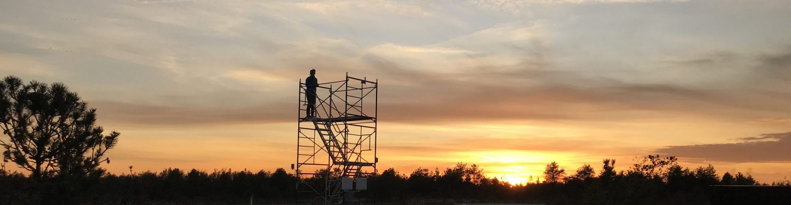

Data

Currently Operational Sites
Click here for a map of our field sites.
Burns Bog 1
- Data Preview Graph (CA-DBB) (2014 - *, Delta, BC, Canada)
- Download Data for CA-DBB from Ameriflux.
- Data from the web plots are available here (prefix BB. note that this is raw data – no filtering or QCQA. Database codes are available here).
- BB1 Site Photos (also see Dr. Andreas Christen’s previous photos from when he held his position at UBC)
Burns Bog 2
- Data Preview Graph (CA-DB2) (2019 - *, Delta, BC, Canada)
- Data for CA-DB2 will soon be availble from Ameriflux.
- Data from the web plots are available here (prefix BB2. note that this is raw data – no filtering or QCQA. Database codes are available here).
- BB2 Site Photos
Delta Salt Marsh
- Data Preview Graph (CA-DSM) (2021 - *, Delta, BC, Canada)
- Data from CA-DSM will soon be available on AmeriFlux.
- Data from the web plots are available here (prefix DSM. note that this is raw data – no filtering or QCQA).
- DSM Site Photos
Richmond Brackish Marsh
- Data Preview Graph (CA-RBM) (2021 - *, Richmond, BC, Canada)
- Data from CA-RBM will soon be available on AmeriFlux.
- Data from the web plots are available here (prefix RBM. note that this is raw data – no filtering or QCQA).
- RBM Site Photos
UBC Climate Station on Totem Field
- Access to custom data download of standard measured meteorological observations (air temperature, humidity, precipitation, soil temperatures, solar irradiance, wind) measured since 1958. Data can be downloaded in .csv format.
Code and Documentation
Our lab github hosts code for flux processing, README docs for our lab, and various other bits of information.
More documentation related to maintenance procedures for our sites can be found here.